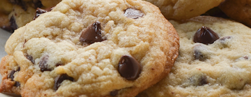

Homepage
My favorite cookies

Jump to recipe
Background of my cookie
I chose this recipe because it is from my grandma and my mom an I love these
! I remember when I was younger and my mom made them for me whenever I was sad or if I did a good job. It reminds me of happier times when I was younger and I was at peace mostly and had a doggo named Adam. I remember my mom said the reason that those cookies were so good was because of a secret ingredient and she said that "The secret ingredient is love" and thay was obviously cap but ehh.
The recipe
You will need these ingredients
| Measurement |
Item |
| 1 cup |
Salted butter |
| 1 cup |
Sugar |
| 1 cup |
Light brown sugar |
| 2 teaspoons |
Pure vanilla extract |
| 2 |
Large eggs |
| 3 cups |
All purpose flour |
| 1 teaspoon |
Baking powder |
| 1/2 teaspoon |
Baking powder |
| 1 teaspoon |
Salt |
| 2 cups |
Chocolate chips |
Preheat oven to 375 degrees F. Line three baking sheets with parchment paper and set aside then follow these instructions in order.
- In a medium bowl mix flour, baking soda, baking powder and salt. Set aside.
- Cream together butter and sugars until combined.
- Beat in eggs and vanilla until light (about 1 minute).
- Mix in the dry ingredients until combined.
- Add chocolate chips and mix well.
- Roll 2-3 Tablespoons (depending on how large you like your cookies) of dough at a time into balls and place them evenly spaced on your prepared cookie sheets.
- Bake in preheated oven for approximately 8-10 minutes. Take them out when they are just barely starting to turn brown.
- Let them sit on the baking pan for 5 minutes before removing to cooling rack.
Things to note
- This is enough batter for 36 cookies
- You can substitute the butter with coconut oil or vegan butter
- You can freeze the dough for up to 2 months just let it thaw to room temp and bake
- DO NOT OVER BAKE THEY ARE MEANT TO BE A BIT DOUGHY!!